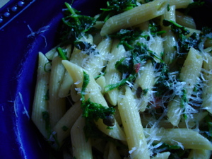

Mom cooks zesty pasta
I tried the Wilkinsburg location of the Pittsburgh Farmers’ Markets and was disappointed to see only 2 vendors there since I was hoping to get something to cook for dinner. All I bought was a bag of spring mix and some arugula from one of them and 2 big boxes of lovely strawberries from the other.
After cooking a big dinner for eight people last night I wanted to take it a bit easy tonight. The following recipe from one of my new Donna Hay cookbooks seemed to fit the bill, and it used the arugula. It’s on a page of suggestions for quick pastas, what she calls “short order”, and is simply entitled Zesty. The recipe calls for frying parsley “until crisp” in olive oil. When I followed this directive I didn’t find the parsley got crisp, it got sort of tough and stringy, and my husband found it to be too bitter. It was a little bitter, but that didn’t bother me. I have found that men don’t like these flavors as well as women do in general, especially bitter greens, and I wonder if men even perceive them the same. Maybe it’s due to gender, and women’s bodies cry out for the iron in the bitter greens and why they taste better to us. (Although as a woman no longer in my child-bearing years I don’t need iron any more!)
I used the optional arugula in the recipe, and as I was chopping it the aroma took me right back to Tuscany, where it is featured in so many dishes, particularly Tuscan steak which is heaped with arugula and shaved parmigiano cheese. I don’t think I’ve used arugula in my own kitchen since I was in Italy back in 2002, and I had forgotten all about its unique peppery smell and taste. I wish I had gotten more at the market.

Zesty Pasta, from Off the Shelf, Cooking from the Pantry, by Donna Hay
Cook 14 oz. orecchiette or penne until al dente, then drain. Over medium heat fry 2 tablespoons shredded lemon zest, 2 tablespoons rinsed salted capers, 1/2 cup parsley leaves and 2 chopped red chillies in 1/3 cup olive oil until the parsley is crisp. Toss through the hot pasta and serve as a side dish, or with added parmesan and shredded arugula for a simple meal.
Comments
Other than the bitterness, did it taste good?
Good question, son! Yes, it did taste good, but not extraordinarily so. I liked it more than the guys did. BTW, these salted capers seem to be the new thing, but you really do have to rinse them off well. I rinsed these under hot water and they were still quite salty.
How about the photo on this post, though? I think it’s my best one yet.
I have definitely noticed the gender/bitter greens thing. I bet you are right that it has something to do with iron. I have major anemic tendencies, and crave bitter foods-greens especially-with a ferocity which is quite unsettling at times.
I find that for people who are not already enamoured of bitter greens (did I mention that I adore broccoli rabe beyond reason?) it helps if they are introduced in a setting where they will not be comfortable actually spitting them out. (i.e. not in their home, surrounded by people they are sure will love them anyway).
I tell them ahead of time that it is an unusual taste, very special, etc,., and just let them taste a little bit of mine. This has worked rather well on two occasions. One initiate was actually seen to buy himself some.
Still, some people will never like them, I guess.
This recipe sounds delicious to me. I read the list of ingredients and don’t think it could possibly be bad.
Of course, many times I’ve had that can’t-possibly-be-bad thought about a recipe only to find out that, yes, it is possible.
Lindy—I adore broccoli rabe as well, and don’t eat it nearly as often as I’d like to because the menfolks don’t like it. Laurie Colwin has a whole chapter on bitter greens in Home Cooking, and talks about men not liking them.
Julie, I wish I had read your blog more carefully before making this recipe because the dish you prepared with the pasta and arugula looks even easier and better!
Add a comment